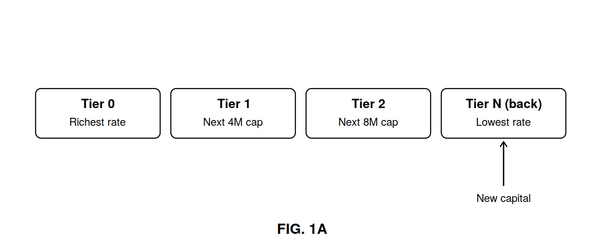
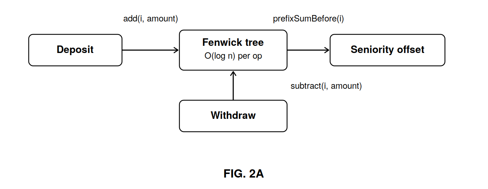
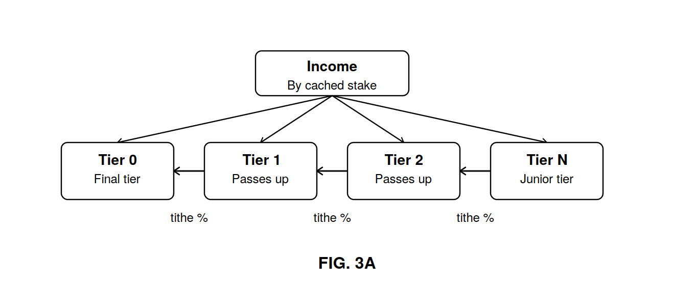
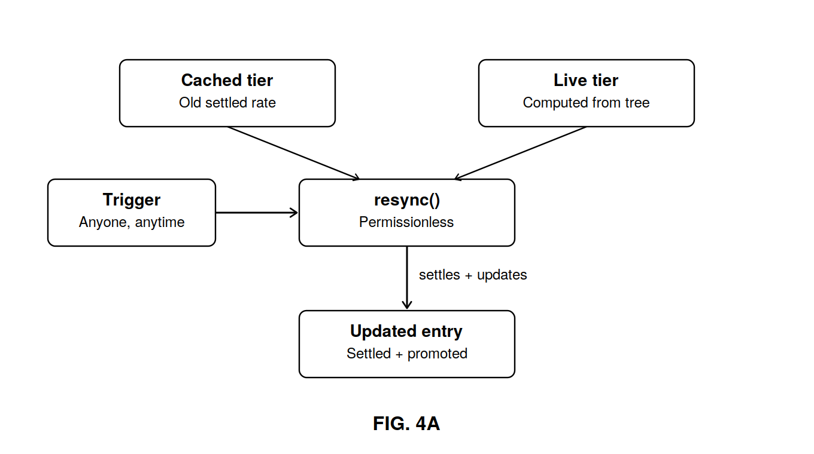

A process, in a system of one or more computers, for administering a pooled capital structure in which capital contributed by many participants is recorded as tokenized entries in a single ordered queue, and in which each entry's reward rate is not fixed at the time of contribution but is instead a live function of how much other, still-active capital is recorded ahead of it in the queue. As earlier-recorded capital exits the structure, later entries automatically qualify for a more favourable reward rate without any transaction, claim, or other action on the part of their holders. Because recalculating every affected entry's position on every such exit is computationally impractical as the number of entries grows, the disclosed system computes each entry's position using an order-statistic data structure supporting insertion and decrement operations in time logarithmic in the number of entries, and defers the realization of an entry's improved rate to a permissionless resynchronization operation that may be triggered by any party at any time, including automatically as a side effect of the entry's own subsequent transactions.
Pooled, tokenized capital structures that finance income-producing assets — including real estate, receivables and inventory — commonly seek to reward capital that commits early and remains invested over a long period, on the theory that such capital bears more duration risk and provides more stable, long-term funding than capital that can exit at will. Existing approaches generally fall into two categories, each with a significant drawback.
The first imposes fixed lockup periods, vesting schedules or early-withdrawal penalties. These reward duration, but do so rigidly: a participant's reward schedule is fixed at the time of commitment and does not respond to the subsequent behaviour of other participants, and exit before the schedule completes is discouraged or penalized rather than left free. The second distributes income purely pro-rata across all active capital regardless of arrival time or duration, which imposes no penalty on early exit but also provides no structural reward for staying.
A design that instead ties a participant's reward rate to their live position in an ordered queue of still-active capital — improving automatically as earlier capital exits, without lockups, penalties or required action — presents a distinct computational problem solved by neither existing approach. If a participant's position must reflect the current total of active capital ahead of them, then in principle every affected participant's position must be recalculated each time any earlier participant exits. For a queue with many participants, recalculating every affected position on every exit event is prohibitively expensive to compute and, in an on-chain or similarly resource-metered computing environment, prohibitively expensive to pay for.
No prior tokenized pooled-capital system known to the applicant computes and maintains a continuously reordered seniority queue of this kind using a data structure and settlement scheme bounded to logarithmic, rather than linear, cost per exit event.
In an electronic system and method, capital contributed to a pooled structure is recorded as a sequence of entries ordered by time of arrival. Each entry's reward tier is not a fixed label assigned once, but is derived, at the time it is needed, from the sum of active capital recorded in every entry ordered ahead of it — a value referred to herein as the entry's seniority offset. A series of predefined, ascending cumulative capital thresholds divides the queue into tiers: the entry with the smallest seniority offset occupies the most favourable tier, and each successive band of seniority offset occupies a progressively less favourable tier. New capital is always recorded at the end of the queue, so that its initial seniority offset — and therefore its initial tier — is determined entirely by the total active capital already recorded in the structure at the moment of its arrival.
Because an entry's seniority offset must fall automatically whenever any earlier-ordered entry's active capital is reduced or withdrawn, without any write operation being applied to the later entry's own stored record, the seniority offset for any entry is computed using an order-statistic data structure — such as a Fenwick tree (binary indexed tree) or an equivalent — supporting:
Because the structure never stores a participant's seniority offset directly, but derives it live from a prefix-sum query, an entry's tier improves as an automatic consequence of any earlier entry's withdrawal — without that improvement having been written to any record at the moment it becomes true.
To bound the computational cost of realizing this automatic improvement, the disclosed system defers settlement. Each entry maintains a cached tier value, distinct from its live, currently computed tier, together with a record of reward already settled at that cached tier's rate. A resynchronization operation — callable by any party, whether the entry's own holder, an unrelated third party, or an automated keeper process incentivized to do so — settles any reward owed at the entry's prior cached tier rate and then updates the cached tier to match the entry's current live tier. The same resynchronization is also triggered automatically as a side effect of the entry's own deposit, withdrawal or reward-claim transactions. The practical consequence is that an entry's improved rate is always eventually realized and paid, but is only reflected in the entry's settled balance as of whenever resynchronization for that entry is next performed, rather than retroactively as of the exact moment its seniority offset crossed a tier boundary.
Reward income introduced into the structure is allocated among tiers in proportion to each tier's currently cached aggregate active capital, after which each tier other than the most senior contributes a designated percentage of its own allocated share to the tier immediately senior to it. By performing this contribution step across all tiers in a single pass, ordered from least senior to most senior, a junior tier's contribution is included in the base amount from which the next tier's own contribution is calculated — so that the effect cascades and compounds toward the most senior tier within a single distribution event. Where a tier's cached aggregate active capital is zero at the time of a distribution, that tier's allocated share is instead carried forward to the nearest tier, by seniority order, having non-zero cached aggregate active capital, so that no portion of a distribution is left unallocated.
Each entry's total earned reward is computed as the sum, across every period since its cached tier was last settled, of the reward-per-unit-capital index recorded for that tier during the relevant period, multiplied by the entry's active capital — so that a change in an entry's tier at any point in time correctly affects only the reward accrued from that point forward, without requiring the system to recompute or iterate over every other entry's history.




What is claimed for: